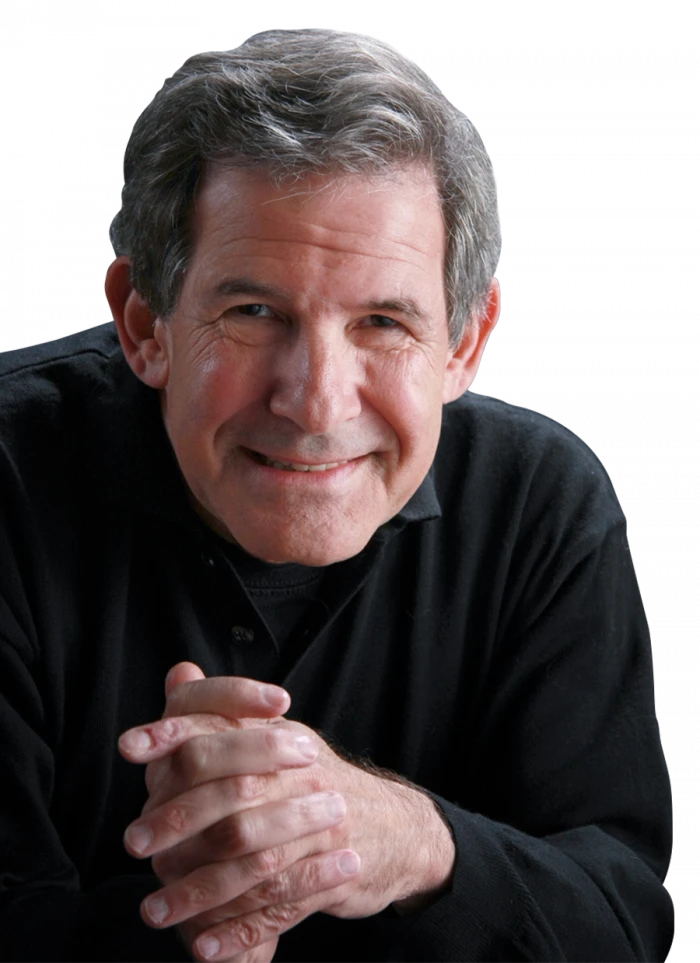

An Evening With Gary Zukav
Spend an Evening with Gary Zukav
Join monthly live Zoom calls with spiritual teacher and author Gary Zukav for wisdom you can apply now to create a fulfilling life of love and joy.
You know there is more to life than what you see.
You sense that the Universe is alive, wise, and compassionate.
Nothing is random. Everything has meaning.
You are eager to find your deeper purpose and live a life that authentically fulfills you.
Gives anyone who desires to grow spiritually:
Monthly 60-minute heart-opening Zoom group calls LIVE with Gary Zukav.
Deep-dive into relevant topics with Gary's guidance and inspiration.
The opportunity for your questions to be answered LIVE by Gary Zukav.
3 curated journal prompts to deepen your self-exploration.
4
Consecutive NYT bestsellers
35
Oprah Winfrey Show appearances
6M
Copies of his books published
32
Languages
Gary is a spiritual teacher and author of four consecutive New York Times bestsellers, including the legendary The Seat of the Soul. His insights, warmth, and contagious enthusiasm have endeared Gary Zukav to millions of viewers through his 35 appearances on The Oprah Winfrey Show.
"I offer these calls to express my heart and support you – what is your heart expressing? And how can you support it? Trust, relax, do your best, and enjoy yourself.
An evening filled with wisdom, wit, and love.
In this rare opportunity to connect with Gary Zukav, you will gather with others online for an evening filled with wisdom, wit, and love – from the comfort of your home.
Come join us with an open heart as we engage in intimate conversations around world topics and personal issues.
After each call, The Seat of the Soul team – including Gary – creates 3 Journal Reflection Questions related to the topic.
Stimulate your introspection.
Ignite your creativity.
Apply what you've learned to your day-to-day life.
Details and pricing
Before now, receiving guidance from spiritual teacher Gary Zukav was available exclusively to his students in live events and immersive programs. For the first time, you can experience Gary live for just $37 each month and explore the most powerful and life-changing topics imaginable.
Recap of what's included
- Live group call with Gary ZukavOnce monthly for 1 hour covering substantive and relevant topics.
- Practical wisdomTo help you work through life's challenges.
- Q&ASelected participant questions are addressed by Gary, providing insights and new perspectives.
- 3 journal reflection questionsTo support you in growing spiritually.
- Access to the call recordingSo you can experience Gary's wisdom throughout the month.
If you feel called to move into an expanded awareness of who you are, and how you can experience more joy in your life… bring your questions, challenges, and doubts along with an open-hearted commitment, an open mind, and your soul's desires.